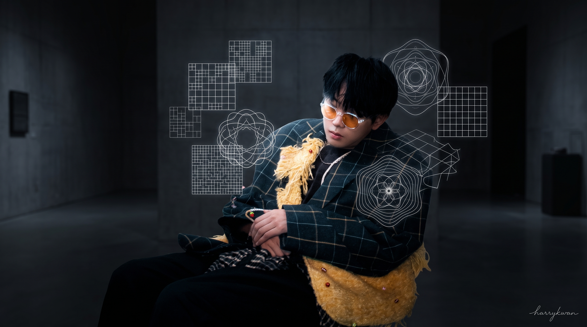

I'm Harry Kwan 關誌諾 — a singer-songwriter/producer and software engineer of 10+ years. My practice lives where sound meets code: gesture-controlled instruments, AI that listens to chords, interactive ecosystems, and tools built for my own stage and studio — then released to the world.
Sound made visible — interactive simulation of Chladni plate resonance patterns, where sand-like particles organise into geometric figures driven by live frequency input.
Living-plant bioelectric signals translated into generative light and motion — an ecosystem that breathes with its biological sensors.
Conway's cellular automata reimagined as an interspecies ecosystem — evolving, competing, cooperating populations rendered as a living canvas.
Webcam hand and face tracking mapped to MIDI: pinch, spread, tilt and height become reverb, filter, pan and delay. A touchless instrument for live performance and accessible music-making.
Music theory and ear-training app with a built-in AI tutor — structured curriculum from intervals to jazz harmony, live on the App Store.
Native AU/VST3 plugins grown from my vocal production workflow: intelligent multi-band compression and automatic gain-riding, built in Xcode and JUCE.
Native macOS tool for music-video makers: sync lyrics to footage, AI-assisted clip tagging and timeline assembly. Whisper timing + LLM tagging.
AI-generated synthesizer presets — describe a sound in words, a reasoning LLM designs the patch, download a playable .SerumPreset for Serum 2. Binary preset format reverse-engineered from scratch.
Six-year quest to make software that listens like a musician: the browser hears live audio, classifies the chord in real time and auto-scrolls the chord sheet. From CUHK final-year project (KNN on spectral features, ml5.js) to a production rewrite (Nuxt + serverless), to ChordMac and chord-server (native macOS app and Dockerized service).
AI + computer vision platform for rehabilitation treatment. Posture analysis, real-time motion tracking, personalised treatment plans. Multi-region deployment across HK and UK.
Managed outsourced teams in Vietnam & HK. Built TrailGuard+ — CSDI open-data platform integrating MongoDB, AWS Lambda and Mapbox for GPS trail safety apps.
AWS serverless architecture with MongoDB; video chatbot system for training medical students.
CRM + automation; NFT + AR platform; online course platforms, scraping and automation systems.
Timetable matching system, society registration platform, college website, educational mobile apps.
Aigniter / Jarvis Pay (hybrid mobile) · Oursky (CI/CD) · GlobalActive (backend dashboard, MicroBit smart-city materials).
JavaScript / TypeScript · Python · Swift · HTML / CSS · Java · PHP · Bash
Node.js · Express · Vue.js (Nuxt) · React (Next.js) · Capacitor · Flutter
Lambda · API Gateway · EC2 · S3 · DynamoDB · Serverless Framework
MongoDB · MySQL · DynamoDB · Firebase Firestore
Computer vision · OpenCV · MediaPipe · ml5.js · Python ML pipelines · LLM integration
Docker · Git · CI/CD · GitHub Actions · Mapbox · Stripe · Google Workspace